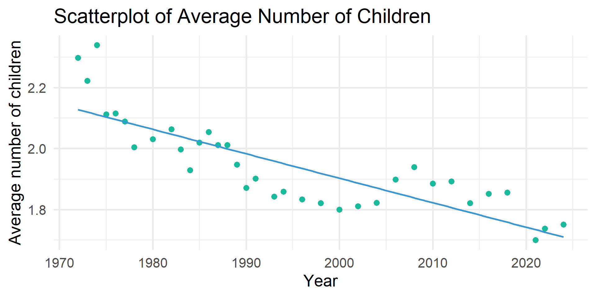
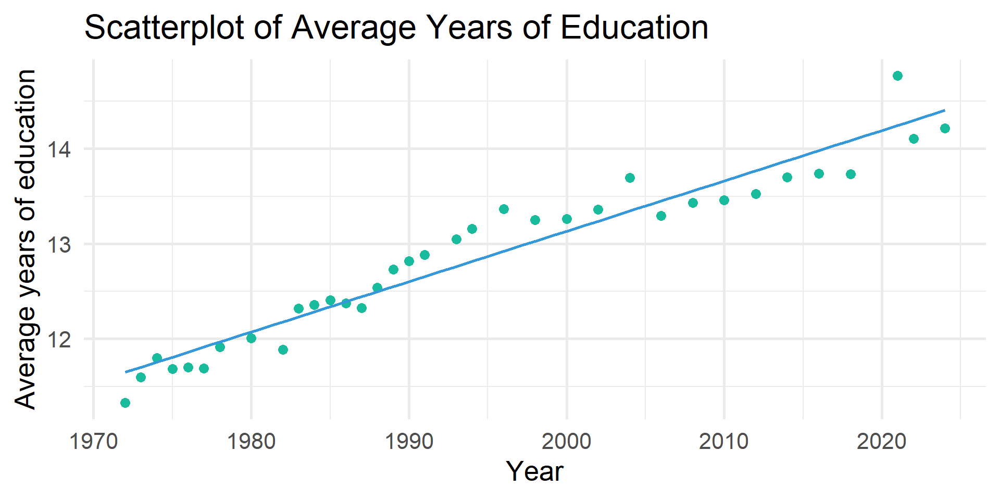
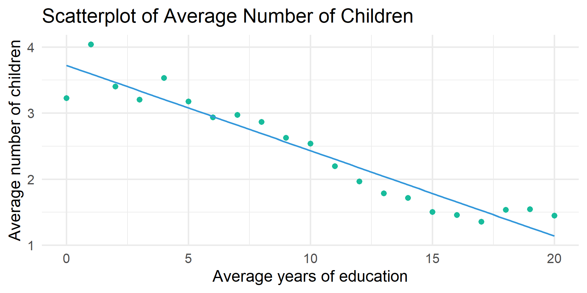
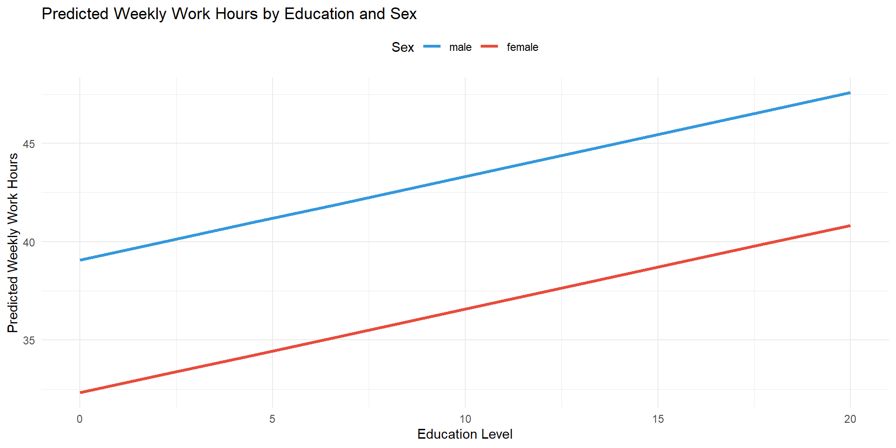
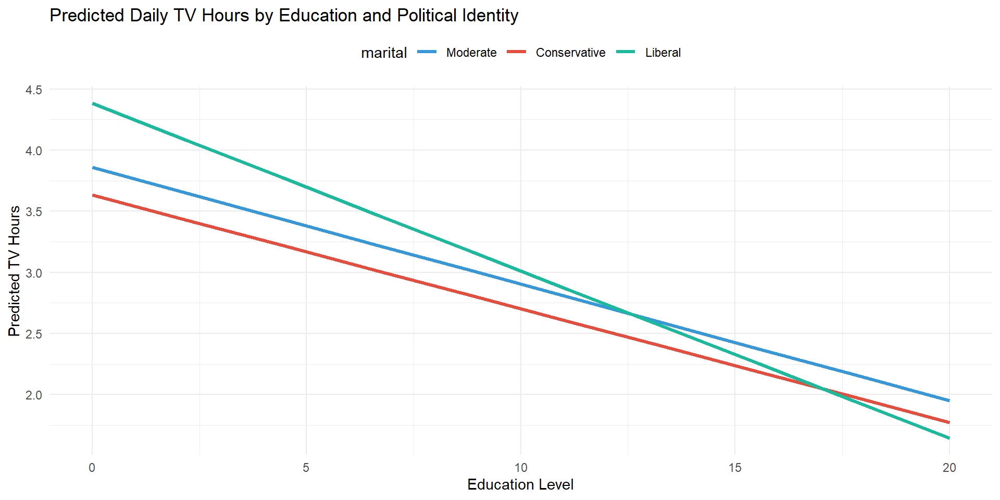

By the end of the lecture, you will be able to …
Download and open code-along-09.qmd
Load the standard packages and new package modelbased.
year Survey yeartvhours Hours per day watching tvrealrinc R’s income in constant $age Age of respondenteduc Respondents highest edu credithrs1 How many hours did you work last weekchilds How many children have you ever had?polviews Think of self as liberal or conservativesex Respondents sexmarital R’s marital statusMake a df with only the (pretty) categorical and continuous variables we’ll analyze.
# Categorical Variables
my_cat <- gss_all |>
select(id, year, polviews, sex, marital) |>
zap_missing() |>
mutate(
polviews = as_factor(polviews),
sex = as_factor(sex),
marital = as_factor(marital)) |>
droplevels()
# Continuous Variables
my_con <- gss_all |>
select(id, year, tvhours, age, educ, hrs1, realrinc, childs) |>
mutate(
age = as.numeric(age),
educ = as.numeric(educ),
hrs1 = as.numeric(hrs1),
realrinc = as.numeric(realrinc),
childs = as.numeric(childs))
# Combine the two dataframes
my_data <- full_join(my_cat, my_con, by = c("year", "id")) # match by 2 varsHave the average number of children changed over time?
# Create scatterplot with a regression line
my_data |>
group_by(year) |>
summarize(avg = mean(childs, na.rm = TRUE)) |>
ggplot(aes(x = year, y = avg)) +
geom_point(color = "#18BC9C", size = 3) +
geom_smooth(method = "lm", se = FALSE, color = "#3498DB") +
labs(
title = "Scatterplot of Average Number of Children",
x = "Year",
y = "Average number of children") +
theme_minimal(20)
Pearson's product-moment correlation
data: childs and year
t = -18.896, df = 75405, p-value < 2.2e-16
alternative hypothesis: true correlation is not equal to 0
95 percent confidence interval:
-0.07575205 -0.06154441
sample estimates:
cor
-0.06865171 # A tibble: 2 × 7
term estimate std_error statistic p_value lower_ci upper_ci
<chr> <dbl> <dbl> <dbl> <dbl> <dbl> <dbl>
1 intercept 17.2 0.811 21.2 0 15.7 18.8
2 year -0.008 0 -18.9 0 -0.008 -0.007Square R
cor
0.004713057 Are the trends explained by increases in education?
# Create scatterplot with regression line
my_data |>
group_by(year) |>
summarize(avg = mean(educ, na.rm = TRUE)) |>
ggplot(aes(x = year, y = avg)) +
geom_point(color = "#18BC9C", size = 3) +
geom_smooth(method = "lm", se = FALSE, color = "#3498DB") +
labs(
title = "Scatterplot of Average Years of Education",
x = "Year",
y = "Average years of education"
) +
theme_minimal(20)
# Create scatterplot with regression line
my_data |>
group_by(educ) |>
summarize(avg = mean(childs, na.rm = TRUE)) |>
ggplot(aes(x = educ, y = avg)) +
geom_point(color = "#18BC9C", size = 3) +
geom_smooth(method = "lm", se = FALSE, color = "#3498DB") +
labs(
title = "Scatterplot of Average Number of Children",
x = "Average years of education",
y = "Average number of children"
) +
theme_minimal(20)
# A tibble: 2 × 7
term estimate std_error statistic p_value lower_ci upper_ci
<chr> <dbl> <dbl> <dbl> <dbl> <dbl> <dbl>
1 intercept 17.2 0.811 21.2 0 15.7 18.8
2 year -0.008 0 -18.9 0 -0.008 -0.007# A tibble: 3 × 7
term estimate std_error statistic p_value lower_ci upper_ci
<chr> <dbl> <dbl> <dbl> <dbl> <dbl> <dbl>
1 intercept 5.26 0.813 6.47 0 3.66 6.85
2 year -0.001 0 -2.00 0.045 -0.002 0
3 educ -0.131 0.002 -64.5 0 -0.134 -0.127# A tibble: 1 × 9
r_squared adj_r_squared mse rmse sigma statistic p_value df nobs
<dbl> <dbl> <dbl> <dbl> <dbl> <dbl> <dbl> <dbl> <dbl>
1 0.005 0.005 3.07 1.75 1.75 357. 0 1 75407tbl_regression()OLS Regression predicting number of children by survey year and years of education
| Characteristic | Beta | 95% CI | p-value |
|---|---|---|---|
| (Intercept) | 5.3 | 3.7, 6.9 | <0.001 |
| GSS year for this respondent | 0.00 | 0.00, 0.00 | 0.045 |
| educ | -0.13 | -0.13, -0.13 | <0.001 |
| Abbreviation: CI = Confidence Interval | |||
tbl_regression()OLS Regression predicting number of children by survey year and years of education
| Characteristic | Beta | SE | p-value |
|---|---|---|---|
| (Intercept) | 5.3 | 0.813 | <0.001 |
| GSS year for this respondent | 0.00 | 0.000 | 0.045 |
| educ | -0.13 | 0.002 | <0.001 |
| Abbreviations: CI = Confidence Interval, SE = Standard Error | |||
tbl_regression()OLS Regression predicting number of children by survey year and years of education
| Characteristic | Beta1 | SE |
|---|---|---|
| (Intercept) | 5.3*** | 0.813 |
| GSS year for this respondent | 0.00* | 0.000 |
| educ | -0.13*** | 0.002 |
| R² | 0.057 | |
| No. Obs. | 75,166 | |
| 1 p<0.05; p<0.01; p<0.001 | ||
Are weekly hours worked related to education and gender?
# A tibble: 3 × 7
term estimate std_error statistic p_value lower_ci upper_ci
<chr> <dbl> <dbl> <dbl> <dbl> <dbl> <dbl>
1 intercept 38.6 0.32 121. 0 38.0 39.2
2 educ 0.42 0.022 18.7 0 0.376 0.464
3 sex: female -6.58 0.132 -49.9 0 -6.83 -6.32 tbl_regression()OLS Regression predicting weekly work hours by years of education and gender
| Characteristic | Beta1 | SE |
|---|---|---|
| (Intercept) | 39*** | 0.320 |
| educ | 0.42*** | 0.022 |
| sex | ||
| male | — | — |
| female | -6.6*** | 0.132 |
| R² | 0.061 | |
| No. Obs. | 43,167 | |
| 1 p<0.05; p<0.01; p<0.001 | ||
tbl_regression()OLS Regression predicting weekly work hours by years of education and gender
| Characteristic | Beta1 | SE |
|---|---|---|
| (Intercept) | 39*** | 0.320 |
| educ | 0.42*** | 0.022 |
| Women | -6.6*** | 0.132 |
| R² | 0.061 | |
| No. Obs. | 43,167 | |
| 1 p<0.05; p<0.01; p<0.001 | ||
estimate_means()# A tibble: 2 × 7
sex Mean SE CI_low CI_high t df
<fct> <dbl> <dbl> <dbl> <dbl> <dbl> <int>
1 male 44.4 0.0923 44.2 44.5 480. 43164
2 female 37.8 0.0939 37.6 38.0 402. 43164estimate_means()estimate_means()\(38.601 + 0.420_{educ} -6.576_{female}\)
# A tibble: 6 × 8
educ sex Mean SE CI_low CI_high t df
<dbl> <fct> <dbl> <dbl> <dbl> <dbl> <dbl> <int>
1 0 male 38.6 0.320 38.0 39.2 121. 43164
2 0 female 32.0 0.323 31.4 32.7 99.0 43164
3 2.22 male 39.5 0.273 39.0 40.1 145. 43164
4 2.22 female 33.0 0.276 32.4 33.5 119. 43164
5 4.44 male 40.5 0.226 40.0 40.9 179. 43164
6 4.44 female 33.9 0.230 33.4 34.3 148. 43164men with 0 years of education = \(38.601 + .420_{educ}*0\)
women with 0 years of education \(38.601 + .420_{educ}*0 -6.576_{female}\)
men with 2.222 years of education \(38.601 + .420_{educ}*2.222\)
women with 2.222 years of education \(38.601 + .420_{educ}*2.222-6.576_{female}\)

Are weekly hours worked related to education and marital status?
# A tibble: 6 × 7
term estimate std_error statistic p_value lower_ci upper_ci
<chr> <dbl> <dbl> <dbl> <dbl> <dbl> <dbl>
1 intercept 36.5 0.33 110. 0 35.9 37.1
2 educ 0.378 0.023 16.4 0 0.333 0.424
3 marital: widowed -5.94 0.385 -15.4 0 -6.70 -5.19
4 marital: divorced 0.605 0.198 3.06 0.002 0.218 0.993
5 marital: separated -0.278 0.379 -0.733 0.464 -1.02 0.465
6 marital: never married -1.76 0.163 -10.8 0 -2.08 -1.44 Regression Predicting Weekly Work Hours by Years of Education and Marital Status
model |>
tbl_regression(
intercept = TRUE,
label = list(
marital = "Marital status (ref. = married)")) |>
remove_row_type(type = c("reference")) |>
modify_column_hide(conf.low) |>
modify_column_unhide(
column = std.error) |>
remove_abbreviation() |>
add_significance_stars() |>
add_glance_table(
include = c("r.squared", "nobs"))| Characteristic | Beta1 | SE |
|---|---|---|
| (Intercept) | 37*** | 0.330 |
| educ | 0.38*** | 0.023 |
| Marital status (ref. = married) | ||
| widowed | -5.9*** | 0.385 |
| divorced | 0.61** | 0.198 |
| separated | -0.28 | 0.379 |
| never married | -1.8*** | 0.163 |
| R² | 0.015 | |
| No. Obs. | 43,178 | |
| 1 p<0.05; p<0.01; p<0.001 | ||
Are daily TV hours related to education and political identity?
my_data <- my_data %>%
mutate(pol_group = case_when(
polviews %in% c("extremely liberal", "liberal", "slightly liberal") ~ "Liberal",
polviews == "moderate, middle of the road" ~ "Moderate",
polviews %in% c("slightly conservative", "conservative", "extremely conservative") ~ "Conservative",
TRUE ~ NA_character_))
model <- lm(tvhours ~ educ + pol_group, data = my_data)
get_regression_table(model)# A tibble: 4 × 7
term estimate std_error statistic p_value lower_ci upper_ci
<chr> <dbl> <dbl> <dbl> <dbl> <dbl> <dbl>
1 intercept 5.00 0.056 89.1 0 4.89 5.12
2 educ -0.159 0.004 -40.4 0 -0.166 -0.151
3 pol_group: Liberal 0.157 0.031 5.15 0 0.097 0.217
4 pol_group: Moderate 0.192 0.028 6.76 0 0.136 0.247relevel()# A tibble: 4 × 7
term estimate std_error statistic p_value lower_ci upper_ci
<chr> <dbl> <dbl> <dbl> <dbl> <dbl> <dbl>
1 intercept 5.20 0.054 96.4 0 5.09 5.30
2 educ -0.159 0.004 -40.4 0 -0.166 -0.151
3 pol_group: Conservative -0.192 0.028 -6.76 0 -0.247 -0.136
4 pol_group: Liberal -0.035 0.03 -1.15 0.25 -0.093 0.024Does the relationship between TV hours and education differ by political identity?
# A tibble: 6 × 7
term estimate std_error statistic p_value lower_ci upper_ci
<chr> <dbl> <dbl> <dbl> <dbl> <dbl> <dbl>
1 intercept 4.98 0.088 56.5 0 4.81 5.16
2 educ -0.142 0.007 -21.1 0 -0.155 -0.129
3 pol_group: Conservative -0.1 0.128 -0.781 0.435 -0.351 0.151
4 pol_group: Liberal 0.553 0.132 4.20 0 0.295 0.811
5 educ:pol_groupConserva… -0.008 0.01 -0.787 0.431 -0.026 0.011
6 educ:pol_groupLiberal -0.044 0.01 -4.55 0 -0.063 -0.025# Get predicted values
preds <- estimate_means(model, by = c("educ", "pol_group"))
# Plot using ggplot2
preds |>
ggplot(aes(x = educ, y = Mean, color = pol_group)) +
geom_line(linewidth = 1.2) +
labs(
title = "Predicted Daily TV Hours by Education and Political Identity",
x = "Education Level",
y = "Predicted TV Hours",
color = "Political Identity") +
theme_minimal(20) +
theme(legend.position = "top")
1. Run and interpret a regression predicting realrinc with hrs1 and educ
# A tibble: 3 × 7
term estimate std_error statistic p_value lower_ci upper_ci
<chr> <dbl> <dbl> <dbl> <dbl> <dbl> <dbl>
1 intercept -33065. 802. -41.2 0 -34637. -31494.
2 hrs1 481. 10.5 45.6 0 460. 501.
3 educ 2746. 50.4 54.5 0 2647. 2845. 2. Add childs to the regression. Interpret the output.
# A tibble: 4 × 7
term estimate std_error statistic p_value lower_ci upper_ci
<chr> <dbl> <dbl> <dbl> <dbl> <dbl> <dbl>
1 intercept -39248. 851. -46.1 0 -40917. -37580.
2 hrs1 481. 10.5 45.8 0 460. 501.
3 educ 2959. 51.2 57.8 0 2858. 3059.
4 childs 1960. 93.9 20.9 0 1776. 2144. 3. Add marital to the regression. Interpret the output.
# A tibble: 8 × 7
term estimate std_error statistic p_value lower_ci upper_ci
<chr> <dbl> <dbl> <dbl> <dbl> <dbl> <dbl>
1 intercept -33122. 886. -37.4 0 -34859. -31385.
2 hrs1 468. 10.5 44.7 0 448. 489.
3 educ 2888. 51.0 56.6 0 2788. 2988.
4 childs 1021. 105. 9.76 0 816. 1226.
5 marital: widowed -4122. 826. -4.99 0 -5740. -2503.
6 marital: divorced -4029. 420. -9.60 0 -4851. -3206.
7 marital: separated -5769. 816. -7.07 0 -7368. -4171.
8 marital: never married -8792. 394. -22.3 0 -9564. -8020.